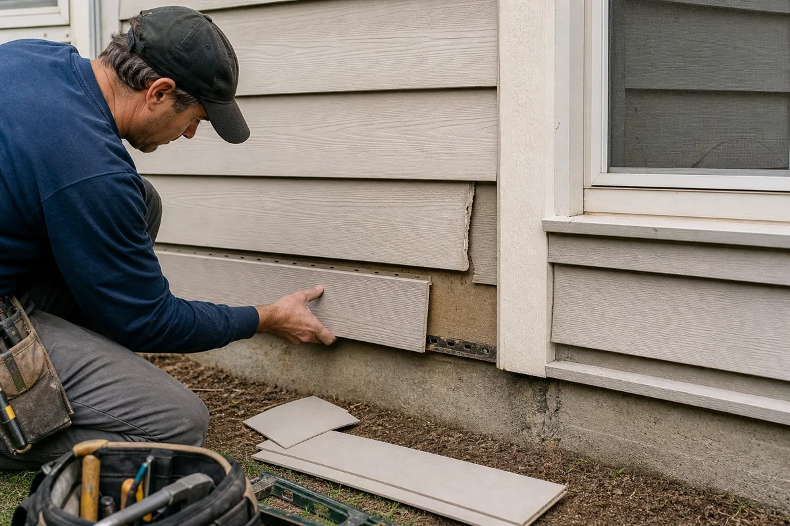

Inspect damage and surrounding details.

Repair
Siding Repair
Siding repair helps restore protection without replacing the entire exterior. A careful repair looks at both visible damage and the reason it happened, so loose panels, impact marks, water stains, and failed trim details are addressed properly.
What this service includes
Every siding project is scoped around the condition of the home, the desired finish, and the hidden details that protect the wall. This service can include:
- Damage inspection and source identification
- Panel replacement or reattachment
- Corner, J-channel, and trim repair
- Caulk, sealant, and penetration detail correction
- Storm or impact damage documentation
- Color and profile matching where available
Material and design options
The right siding package should fit the architecture, maintenance expectations, and budget. Common options include:
Single-area repair
Storm damage repair
Leak-related siding repair
Trim and corner post replacement
Maintenance bundle with inspection
Details that matter
A good repair should blend visually and restore the water-shedding function of the siding. The key is not just swapping a panel, but checking whether fastening, clearances, flashing, or impact caused the issue.
How the work usually moves
Confirm whether matching material is available.
Remove damaged components without disturbing good sections.
Repair or replace the affected area.
Check nearby seams, trim, and water-shedding details.
Questions homeowners ask
Can one siding panel be replaced?
Often yes, if matching material and profile are available and surrounding pieces can be safely unlocked.
Will the color match perfectly?
Older siding may have faded, so the replacement may be close rather than exact. A provider can explain options.
Can siding repair stop a leak?
It can help if the leak source is siding or trim related, but water can also come from windows, roofing, flashing, or gutters.